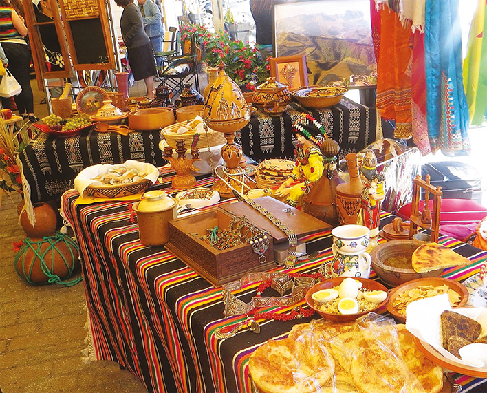
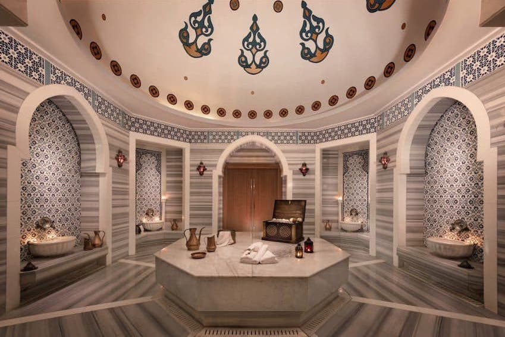
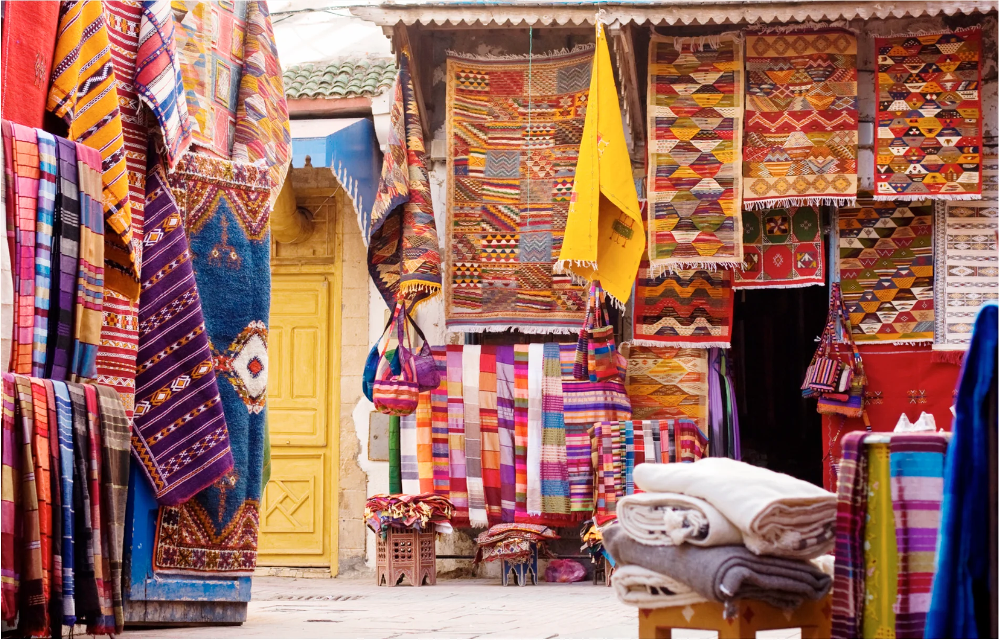
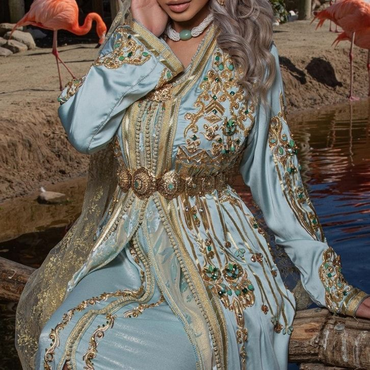

Traditions
Les festivités traditionnelles marocaines reflètent une richesse culturelle profonde et un héritage historique captivant.
Parmi elles, la célébration la plus emblématique est sans doute l'Aïd al-Fitr, marquant la fin du mois sacré du Ramadan.
Ces événements revêtent non seulement une importance capitale en termes de rassemblement familial et amical, mais ils
constituent également des occasions essentielles pour transmettre et vivre pleinement la culture marocaine. Les rituels,
les traditions culinaires et les expressions artistiques associées à ces festivités contribuent à préserver et à partager
la riche identité culturelle du Maroc à travers les générations.
|
 |
Le Nouvel An Berbere
Le Nouvel An Berbère, également connu sous le nom de Yennayer, représente une célébration significative au Maroc.
Cette fête marque le début de l'année berbère selon le calendrier agraire, symbolisant le renouveau et l'abondance.
Les familles se rassemblent autour de repas traditionnels, partagent des rituels symboliques, et les festivités
sont marquées par des danses, des chants et des événements communautaires. Yennayer incarne l'esprit de la culture
berbère, mettant en lumière l'importance de la tradition, de la famille et du lien profond avec la nature.
|
|
 |
Hammam Marocain
Le hammam marocain, un trésor de détente et de tradition, offre une expérience sensorielle unique.
Niché au cœur de l'architecture marocaine, cet espace de bien-être combine chaleur, vapeur et rituels ancestraux.
Les murs ornés de carreaux zelliges colorés créent une atmosphère envoûtante. L'eau chaude, parfumée de senteurs
délicates comme l'eucalyptus, caresse le corps, libérant les tensions. Les séances de gommage au savon noir et
les enveloppements au rhassoul font partie intégrante de ce rituel, laissant la peau douce et revitalisée.
Le hammam marocain transcende le simple acte de se laver pour devenir une célébration de la relaxation et de
la connexion avec les traditions marocaines millénaires.
|
|
 |
Artisanat
L'artisanat marocain incarne l'essence même de la créativité et de l'authenticité. À travers les souks animés
et les ruelles étroites des médinas, les artisans perpétuent des traditions séculaires, transmettant de génération
en génération des savoir-faire exceptionnels. Les tapis tissés à la main, aux motifs chatoyants, racontent des
histoires anciennes, tandis que les poteries aux couleurs vives évoquent l'harmonie avec la nature.
Les artisans du cuir travaillent avec précision pour créer des babouches élégantes et des sacs exquis.
Chaque pièce d'artisanat porte en elle l'héritage culturel du Maroc, reflétant la passion, la patience
et la maîtrise artistique des artisans qui donnent vie à des objets uniques. L'artisanat marocain transcende
la simple création d'objets, il devient une expression artistique profonde qui témoigne de la richesse
culturelle et de l'âme créative du pays.
|
|
 |
Caftan Marocain -
Le caftan marocain, paré de splendeur et de délicatesse, est une véritable pièce maîtresse de l'élégance marocaine.
Ses étoffes luxueuses et ses broderies minutieuses racontent une histoire de savoir-faire ancestral et de tradition
préservée. Ce vêtement emblématique, aux coupes gracieuses, est le symbole d'un art artisanal transmis de génération
en génération. Porté lors des célébrations spéciales, le caftan marocain illumine les occasions festives de ses couleurs
vibrantes, révélant la richesse culturelle et l'héritage artistique du Maroc. Unissant passé et présent, il incarne
la quintessence de la mode traditionnelle marocaine, capturant l'essence même de la beauté intemporelle.
|